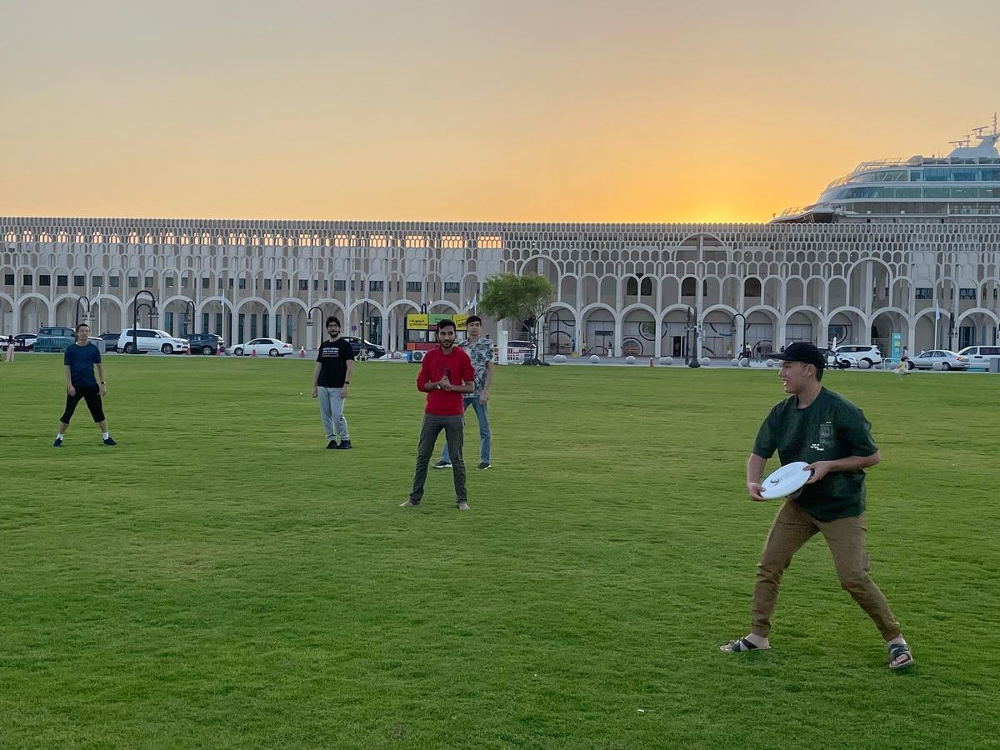
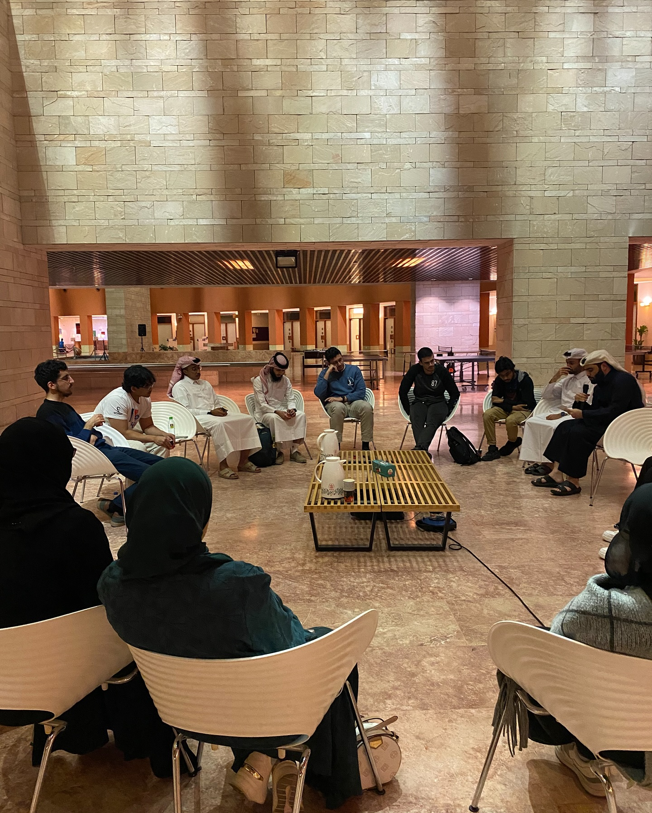
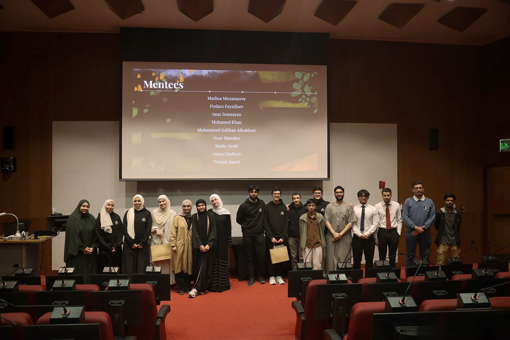

Trips
Step away from campus for shared experiences that turn classmates into close friends.
At CMU-Q, we make room for worship, learning, service, good conversation, and friendships that make campus feel like home.
Student-led in Doha, Qatar.
Some weeks we sit down over karak. Others take us off campus. Each program makes room for learning, reflection, and good company.

Step away from campus for shared experiences that turn classmates into close friends.

Usually held on Thursday evenings or during Wednesday lunch, K&K is open to everyone. A student speaker introduces an engaging Islamic topic, followed by thoughtful group discussion over karak and cookies.

Every Sunday, the MSA team shares a thought-provoking question in the food court and invites the CMU-Q community to respond. Students exchange perspectives, enjoy something sweet, and turn an ordinary campus moment into meaningful conversation.

We share a meal, watch a carefully selected video on an Islamic topic, and then open the floor for reflection and group discussion.

A supportive program for learning correct Qur’an recitation, memorizing new passages, and revising together at a steady, sustainable pace.

We bring speakers to campus for thoughtful talks and discussions on Islamic topics, giving students space to learn, ask questions, and engage with new perspectives.
Checking the campus calendar…
Also on the calendar
Drop by an event, share a meal, or join the conversation.